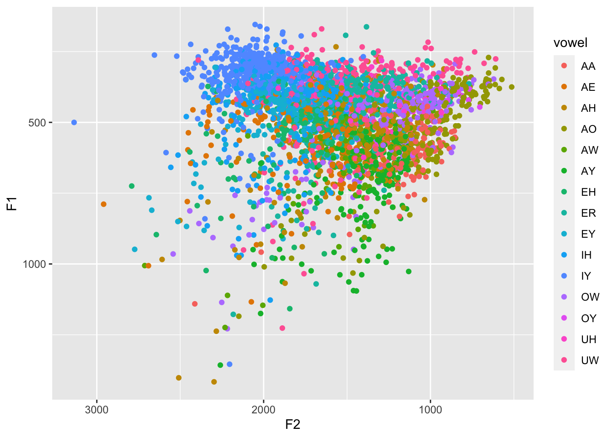
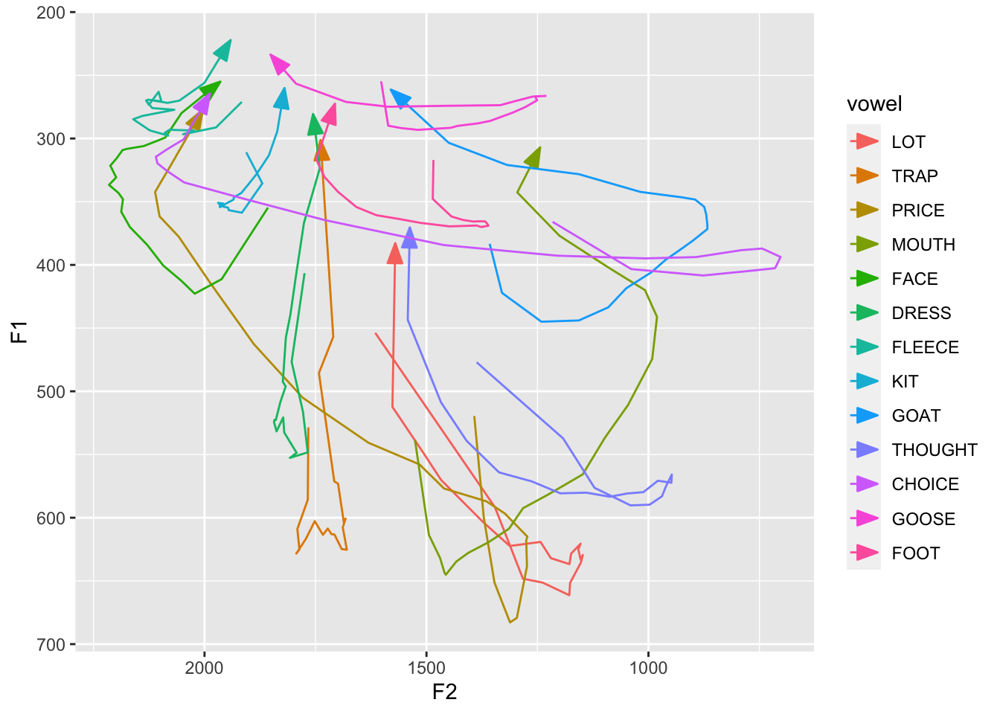

remotes::install_github("joeystanley/joeysvowels")I’ve just released my third R package, joeysvowels. It provides a handful of datasets, some subsets of others, that contain formant measurements and other information about the vowels in my own speech. The purpose of the package is to make vowel data easily accessible for demonstrating code snippets when demonstrating how to work with sociophonetic data. There are no functions contained in joeysvowels; it’s a data-only package.
This is my third package. My first one, futurevisions, contains a collection of color palettes. The second is barktools, which helps you work with Barks in your sociophonetic data (and even has its own hex!). Technically, I have another package called joeyr that is sort of my sandbox package that I use it all the time and has useful functions for sociophonetic work but it’s not quite ready for distribution yet.
Why create a data-only package? A lot of it had to with my barktools and joeyr packages. As I was developing websites for them using pkgdown, I wanted to create some better help files and examples. To do that, I needed real vowel data to work with. So for a while I had a couple datasets built into each of those packages. Sometimes the same dataset was included with both packages, which is fine by themselves, but since I often had both loaded in the same script, it created a small clash. I figured I should just offload the data from the two packages onto a third one, which would then be a dependency of both. Thus joeysvowels was born!
Installation
You can install joeysvowels through GitHub:
You can then load the package like normally:
library(joeysvowels)I’ll load a few other packages for the purposes of this post.
library(ggplot2)
library(tidyr)
library(dplyr)Contents
Currently, there are six datasets contained in joeysvowels. You can access them using data(). I’ll briefly visualize the datasets.
A messy dataset: darla
darla is one that was prepared using pretty standard methods, using the DARLA web interface to automatically transcribe, force-align, and extract formants from the audio. The audio was me reading 300 prepared sentences. It’s a bit of a noisy dataset, so it’s a good example of working with real data and testing out various outlier detection functions. It is also very close to the format that FAVE exports its data, so any tutorials that use FAVE-produced spreadsheets can be followed along using darla.
data(darla)
ggplot(darla, aes(F2, F1, color = vowel)) +
geom_point() +
scale_x_reverse() +
scale_y_reverse()
Cleaner datasets: coronals and its subsets
coronals is a much cleaner, more controlled dataset. You can read about the methods by viewing the documentation (?coronals). Essentially, I read a bunch of (C)CVC(C) nonce words where the consonants were (almost) all coronal. All my vowel phonemes are represented. I aligned and extracted formants from the data myself. Four formants were extracted every 5% of the vowels’ durations, so great for demonstrating functions and visuals involving vowel trajectories.
data(coronals)
avg_trajs <- coronals %>%
group_by(vowel, percent) %>%
summarize(across(c(F1, F2), mean)) %>%
print()# A tibble: 273 × 4
# Groups: vowel [13]
vowel percent F1 F2
<fct> <dbl> <dbl> <dbl>
1 LOT 0 454. 1616.
2 LOT 5 592. 1346.
3 LOT 10 648. 1283.
4 LOT 15 651. 1238.
5 LOT 20 661. 1178.
6 LOT 25 651. 1176.
7 LOT 30 636. 1152.
8 LOT 35 630. 1148.
9 LOT 40 633. 1153.
10 LOT 45 625. 1158.
# ℹ 263 more rowsggplot(avg_trajs, aes(F2, F1, color = vowel)) +
geom_path(aes(group = vowel),
arrow = arrow(angle = 20, length = unit(0.15, "in"), type = "closed")) +
scale_x_reverse() +
scale_y_reverse()
If you don’t care about trajectories but would like something clearer than darla, then midpoints what you’ll want. It’s a subset of coronals and contains only the midpoints from F1 and F2.
data(midpoints)
ggplot(midpoints, aes(F2, F1, color = vowel)) +
geom_point() +
scale_x_reverse() +
scale_y_reverse()
If you just need to demonstrate one vowel’s trajectory, check out mouth since it’s only the
data(mouth)
ggplot(mouth, aes(percent, hz, color = formant)) +
geom_path(aes(group = traj_id))mouth_lite is a subset of mouth and trims away most of the columns and only contains 10 tokens.
data(mouth_lite)
ggplot(mouth_lite, aes(percent, hz, color = formant)) +
geom_path(aes(group = traj_id))Multiple speakers: idahoans
idahoans contains formant measurements from 11 individuals from the state of Idaho in the US.These participants did consent to their data being used for teaching purposes and to be distributed to interested researchers. I needed something to test out some functions that do vowel normalization and relying on my own voice wasn’t going to cut it. It’s not a full dataset: for each of the 10 speakers, there are ten tokens per canonical monophthong, randomly selected from a larger dataset. But it should be enough for illustrative purposes. Plus, when was the last time you saw acoustic data from Idaho??
data(idahoans)
ggplot(idahoans, aes(F2, F1, color = vowel)) +
geom_point() +
scale_x_reverse() +
scale_y_reverse() +
facet_wrap(~speaker)Conclusion
That’s it so far! Feel free to use the datasets for teaching and demos. That’s what they’re there for.